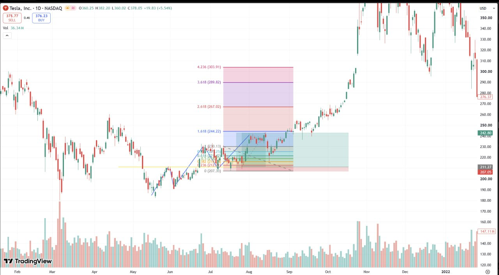
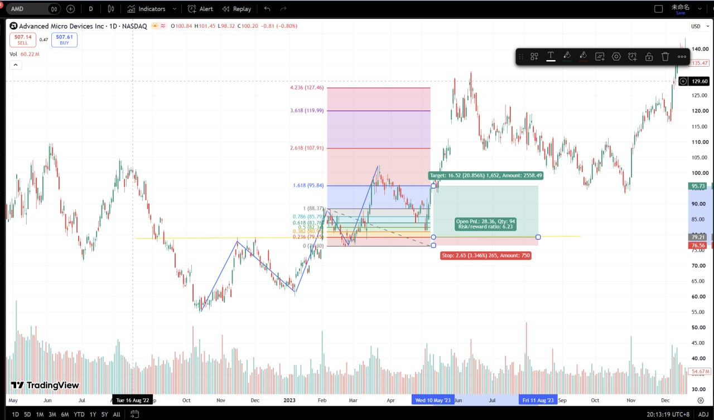
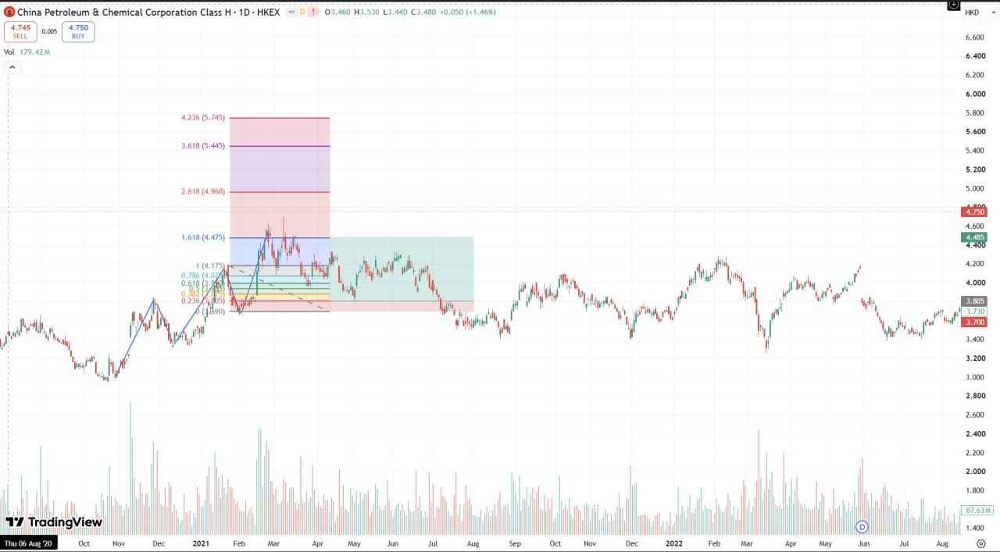
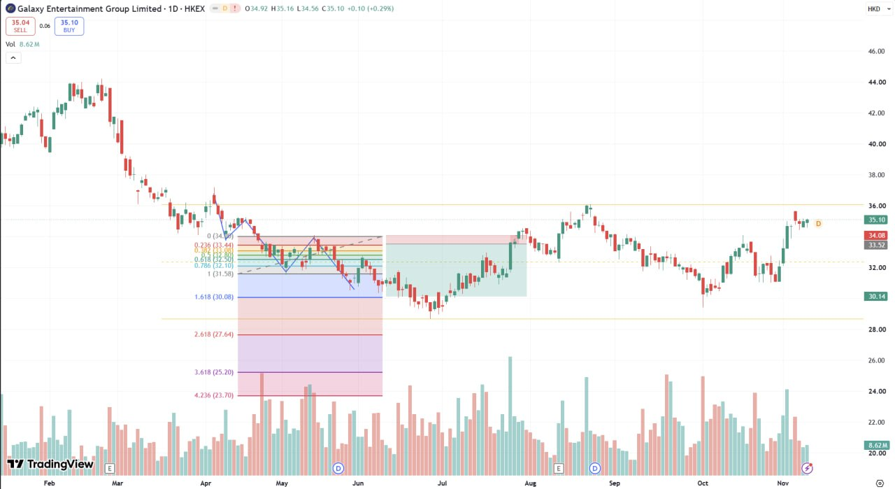
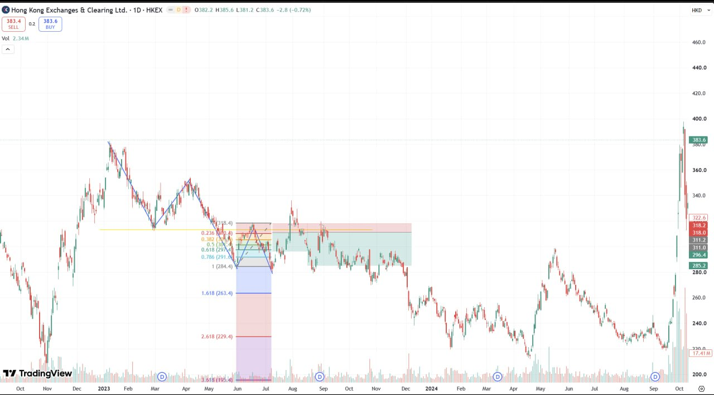
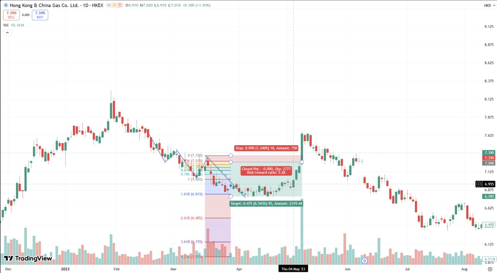
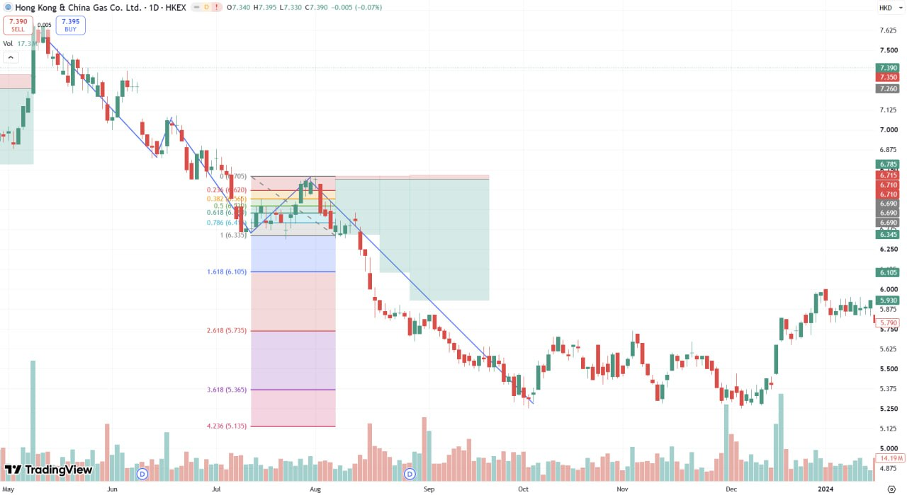
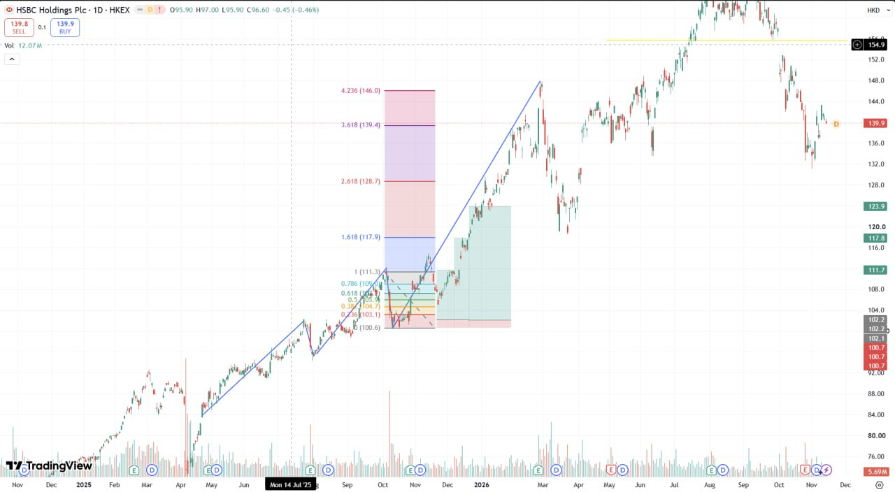
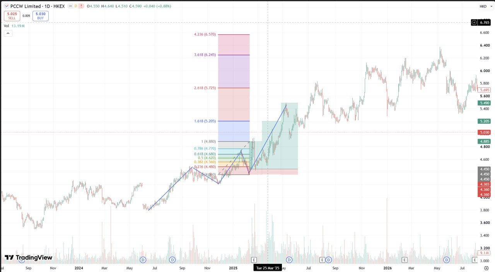
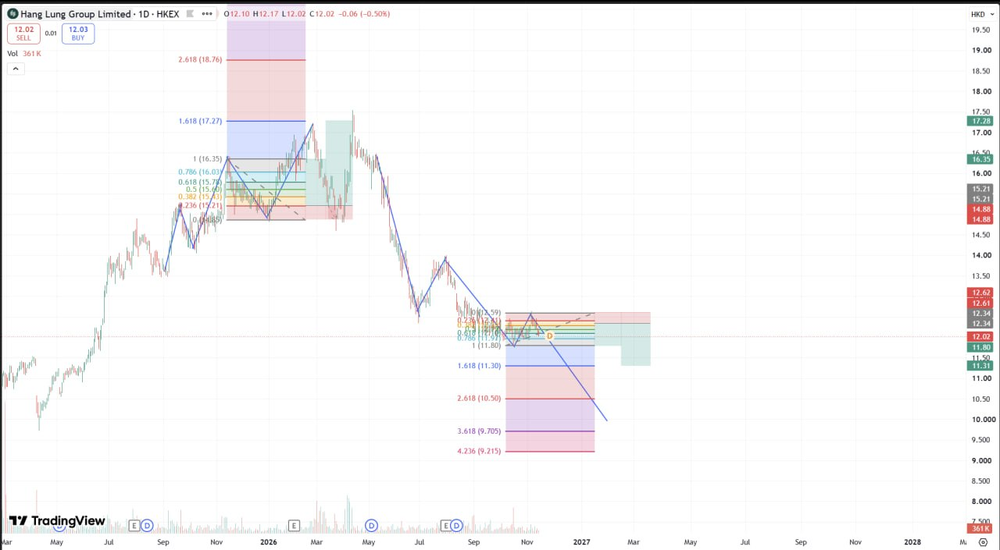

01 · China Unicom (Hong Kong) Limited
762 · 1W · HKEX
週線，軸約 2017-07 至 2028。三條金色水平線框住長年整理，中線穿過近期價。圖上冇 Fib 數字標籤。現價標 5.525。
Trend Continuation · Part 2
同 Part 1：前頂突破，價格急速返回前頂之上先買入。止損放假突破底部。 下面係圖例，只寫圖上讀到嘅名稱、週期、Fib 同倉位。
數字係從截圖讀出，唔係行情重拉。有錯就講，我改。
週線，軸約 2017-07 至 2028。三條金色水平線框住長年整理，中線穿過近期價。圖上冇 Fib 數字標籤。現價標 5.525。

日線，軸 Feb 至 2022。延伸：1.618 (244.22)、2.618 (267.02)、3.618 (289.82)、4.236 (303.91)。細 fib 由 0 (207.35) 至 0 (230.13)。圖上有藍盒、綠盒同三角收斂。代號圖上冇寫。

日線，約 2022-05 至 2023-12。多單盒：入場 76.56、止損 73.91（Stop 2.65 / 3.346%）、目標 95.73（Target 16.52 / 20.856%）、R:R 6.23。Fib 0 (76.80) 至 4.236 (127.46)。

日線，2020-08-06 至 2022-08。Fib 0 (3.575) 至 4.236 (5.745)，粉 / 紫 / 藍 / 綠區，另有下降通道虛線。代號圖上冇寫。

日線，軸 Feb–Nov（年份圖上冇寫）。Fib 0 (34.68)、1 (31.58)、1.618 (30.08)、4.236 (23.70)。代號圖上冇寫。

日線，約 2023-10 至 2024-10。Fib 1 (284.4)，延伸 1.618 (263.4)、2.618 (229.4)。圖上有三角同橫向色區。代號圖上冇寫。

日線，十字線 Thu 04 May '23。倉位盒（放大核過）：Stop 0.090 (1.240%)、Target 0.475 (6.543%)、Closed PnL -0.090、Qty 2777、Risk/reward ratio 5.28。入場價圖上冇標。止損區在上、目標區在下。

日線，軸 2023-01 至 2024-05，兩個藍框日期 Mon 31 Jul '23、Mon 04 Sep '23。兩組 Fib：右組完整 0 (6.760)、0.382 (6.620)、0.5 (6.590)、0.618 (6.480)、0.786 (6.415)、1 (6.335)，延伸 1.618 (6.105)、2.618 (5.735)、3.618 (5.365)、4.236 (5.135)；左組 0–1 被燭遮住，只讀到延伸 1.618 (6.815)、2.618 (6.485)、3.618 (6.155)、4.236 (5.955)。粉 / 綠 / 紫區。代號圖上冇寫。

日線，軸約 2024-11 至 2026-12，十字線 Mon 14 Jul '25。Fib 0 (100.6) 至 1 (111.3)，延伸 1.618 (117.9)、4.236 (146.0)。代號圖上冇寫。

日線，約 2023-07 至 2026-07，十字線 Tue 25 Mar '25。Fib 4.236 (6.570)、1.618 (5.205)、1 (4.880)、0.236 (4.480)。綠區同藍上升線。0 水平被燭遮住，唔當已讀。代號圖上冇寫。

日線，軸約 2025-03 至 2028-03。上組 Fib：2.618 (18.76)、1.618 (17.27)、1 (16.35)、0.786 (16.03)。下組延伸：1 (11.80)、1.618 (11.30)、2.618 (10.50)、3.618 (9.705)、4.236 (9.215)。下組 0–0.786 被燭遮住，唔當已讀。代號圖上冇寫。